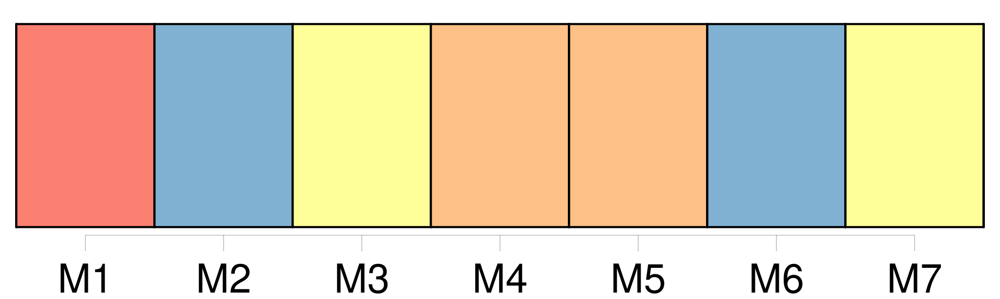
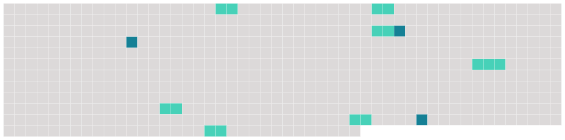

Longueur nb maillons : 10 mentions |
 |
À peine avais -je fait part de ce projet à ma mère, qu'elle voulut préparer elle -même [un panier] rempli de provisions, pour la route. J'étais consterné, [ce panier] détruisait tout le romanesque et le sublime de mon acte. [4 phrases] Tandis que ma mère emplissait [le panier] [qui] me gâtait d'avance ma première nuit d'amour, je voyais les yeux pleins de convoitise de mes frères.
Je pensai bien à [le] leur offrir en cachette, mais une fois tout mangé, au risque de se faire fouetter, et pour le plaisir de me perdre, ils eussent tout raconté. [6 phrases] Les tenant d'une main, tenant de l'autre [ce panier fragile] à cause des bouteilles, j'ouvris avec précaution une petite porte d'office. [13 phrases] Je tenais [le panier] avec mes dents ; je tombai dans une flaque. [4 phrases] Je comptais cacher [mon panier] dans un buisson et [le] reprendre le lendemain. [1 phrases] En effet, au seul endroit où il y eût des buissons et où il était possible de cacher [le panier] , se tenait une sentinelle, gardant le pont de J …… |
 |
Il est possible de télécharger la ressource sur la page Ortolang |
Si vous avez des questions ou vous voyez des erreurs, merci d'envoyer un mail à silvia.federzoni89@gmail.com |